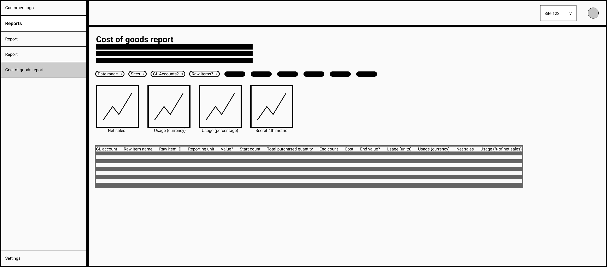
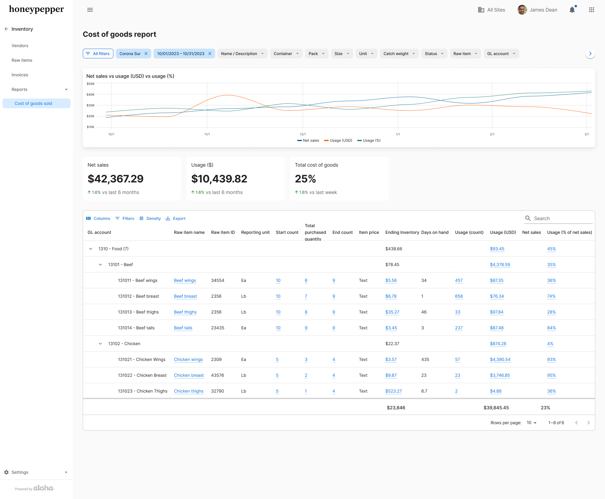
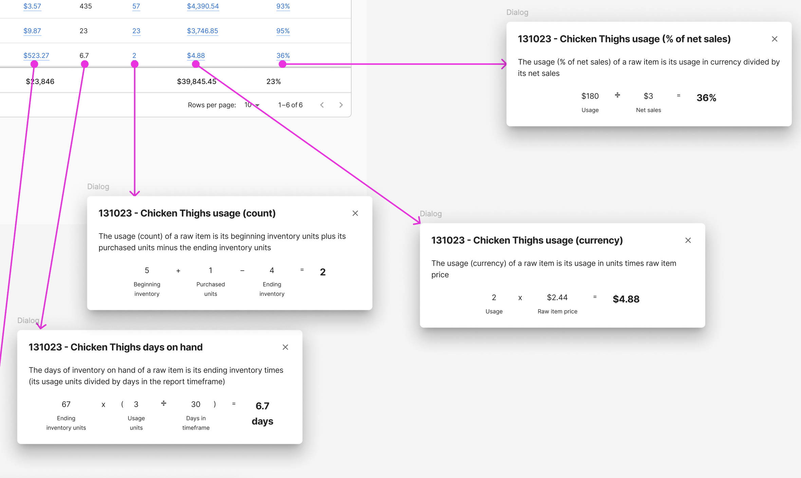
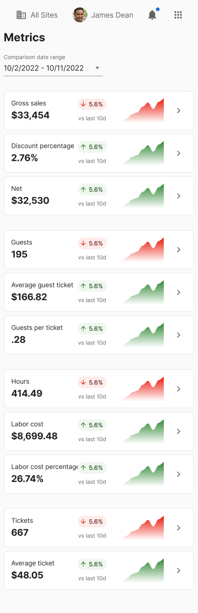
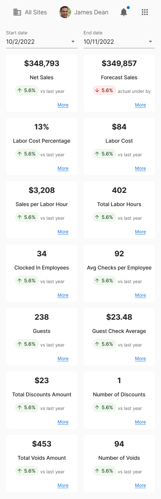
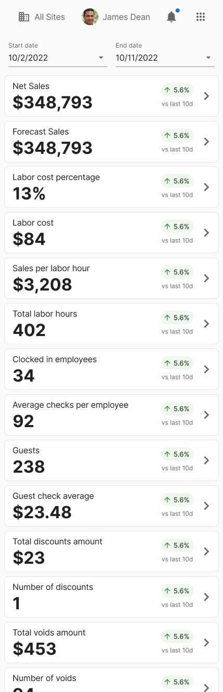
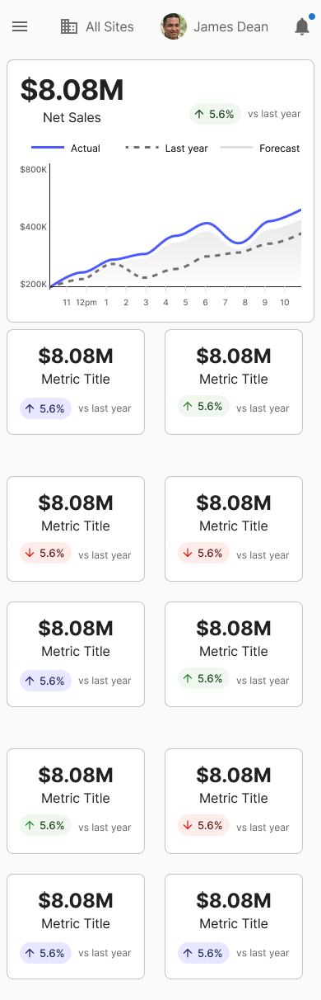

Aloha Smart Manager
Aloha Smart Manager is a one-stop-shop for restaurant owners and operators to manage their business. It includes functionality for labor/employees, inventory management, sales data, and more. It's a huge project with 4 designers and I worked on the inventory features and everything else that didn't didn't fit into one of those categories like notifications, the dashboard, and site management.
I used Figma Make AI to generate ideas and come up with some initial wireframes, and also used Copilot to distill and understand our lengthy and detailed user stories and product requirements.
Strategic importance:
- Replacing disparate tools and systems
- Unified design system
- Web-based
- Mobile-enabled
Customer impact:
- Single source of truth to enable business decisions
- Synchronized data for deeper insights
- Consistent NCR look and feel reinforcing branding
- Simplified recurring billing model
Collaborators:
- Product owners and project managers
- Design system designers
- Fellow project designers
- Restaurant operation domain experts
Example Work: Cost of Goods Sold
The cost of goods sold report answers the question: "is my restaurant making money?" by telling you how much of a menu item's cost goes towards its ingredients, and walking you through the calculation so you can see where any problems are.
The low fidelity work started with gathering the appropriate data and organizing it from left to right to show the story of the calculations. Historically this report is a table, so to improve it we added interactive graphing and visualizations.

High fidelity work continued to implement the design system components, fill in the details of how the data should be organized and displayed so it's informative but not overwhelming: organize the many menu items into collapsible rows and keep a sticky column of the totals to keep the big picture visible.

To further leverage the web-based medium and integrate deeper into the larger product, I added links to the raw items indicated, inventory counts referenced, and added calculation modals to explain the math and show the numbers. I believe this is a ✨strategic advantage✨ over other products because no other product I could find does this, and it targets the less experienced users who may not know all the jargon or processes.

Example Work: Dashboard
And sometimes you have to come up with a lot of versions of something until you're happy and all the stakeholders are happy. We want a lot of information! But not too much... We want it to look pretty! But not be too much work for developers... We want it to be modern and hip! But not offend corporate tastes...




Iterate, iterate, iterate...
CFC Redesign
CFC is the ConFiguration Center that a restaurant owner and operator uses to manage their restaurant. This project was the very start of redesigning CFC to be web-based (instead of a Windows application), use the NCR look and feel, and enable customers to edit their configurations without having to call support for help. We started with the most used features: employees, users, and menu management.
Strategic importance:
- Company standard React web
- Reduce support calls (save money)
- Reinforce NCR branding, look, and feel
Customer impact:
- Vastly simpler experience
- Significantly easier access
- Run restaurant better, easier, and faster
Collaborators:
- Product owners and project managers
- Design system designers
- System architects (migrating platforms)
Product owners identified the most-used features and goals of CFC and listed them out. From there I created an information architecture for the new web app, created low fidelity wireframes, and then adapted those to high fidelity mockups. Throughout this process I met with the product owners to verify my new approach met their needs and let me ask questions about possible vectors for improvements.
During this time the NCR design system was being developed and I contributed one of the first components, a detail drawer, by collaborating with designers on that project and thinking about what I needed and how that could be applied to other projects to create something that would work for everyone across NCR.
Aloha Update Update
Aloha Update is the software updating system for NCR products like points of sale, servers, kitchen displays, terminals, etc. It's very complex to update software because some machines may not have requirements like CPU or RAM, some software versions require other software versions, and timing the updates cannot block business operations.
Strategic importance:
- Updated customer software = better experience
- Reduce support calls
- Additional path for upsells and revenue
Customer impact:
- Easier to use and understand
- No need to schedule updates with NCR
- Get new features and security updates
Collaborators:
- Product owners and project managers
- System architects
- Development manager
This is a very technical process and I learned a lot about how the system works so that I could represent that to the end user. I broke apart interfaces that had no help or explanation and tried to guide the user whenever possible.
Existing tool on the left, my design on the right
Mobile Pay
During the pandemic I designed a mobile web app for restaurant customers to pay their bill on their own device to minimize contact between restaurant staff and guests. I created a mini design system and prototyped interactive flows, all in Figma. Half of the project was the consumer-facing checkout flow, and the other half was the configuration tool the restaurant owner used to set up and customize the system.
Strategic importance:
- Support restaurant operations during the pandemic
- Web-based
- Mobile-first
Customer impact:
- Accept payments while maintaining social distance
- Self-serve option to split checks and pay
- Leverage NCR's new payment system
Collaborators:
- Product owners
- Project managers
- Design director